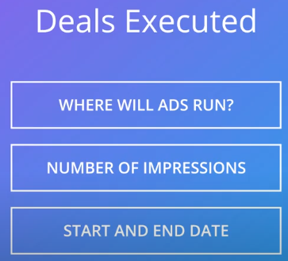
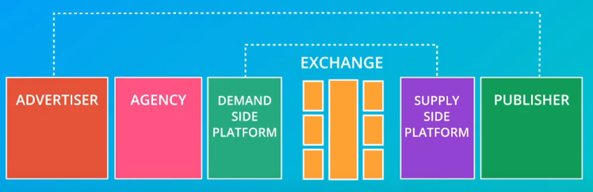

-->This model worked pretty well when there were only a few big websites, After all, if you were an advertiser around the year 2000 and you bought ads on yahoo,AOL,msn, you would reach most of the online population, However some years later with search engines making it easier for people to find other websites and with an explosion of content online it became harder for advertisers to reach their audiences, and since there was now much more inventory available to buy the publishers had a harder time selling all of their advertising space

-->A new model started to emerge, Ad networks came to the scene, Ad networks bundled inventory from many different small sites who did not really have sales teams to sell advertising themselves, advertisers could then go to these networks and buy through them, Ad networks really served as a middleman

-->in the meantime, Google and Yahoo pioneered sponsored advertising in search, the search ads we talked about them, what it was really different about these search ads is that they were bought and sold automatically through an auction that seemed a lot more efficient than buying and selling advertising over the phone or in person, that's also when advertising exchanges started to emerge in

--------------------------------------------------------------------
The Different Display Advertising Sales Models
1-Direct (premium) advertising
The first and most traditional sales model is the direct advertising sale. Ads that are bought and sold this way are referred to as ‘premium ads’. This model closely mimics traditional sales models you will find in other media like TV and magazines.
- Planned ahead of time The advertising campaign is planned ahead of time and the media space for it is bought and scheduled for a specific time on a specific site.
- Preferred by large brand advertisers This method is still largely preferred by large brand advertisers, although brand advertisers are starting to adopt more programmatic advertising as well.
- Typically for larger budgets Direct advertising sales is mostly for larger budget transactions. Smaller sales go through self serve networks (advertising networks and exchanges).
- Primarily context based targeting In direct sales, targeting is most often context or demographics based. The idea is that the entire audience looking at particular content will also be interested in the ads, similar to how one would target in a magazine. Some ad buys, however, are using other ways to target as well, like geographical targeting and behavioral targeting.
- Pricing is mostly on a CPM basis Most direct advertising sales are priced on an impression basis, and advertisers pay the CPM (cost per thousand Impressions). There are also some deals that are priced based on conversion.
- More options for customization Of course, when advertisers and publishers interact, it is possible to go outside of the typical standard advertising formats. Sometimes, you will see advertisers choose creative solutions that are executed with the help of developers of the publisher’s site. These kinds of custom solutions are expensive to execute. Many forms of native advertising are also direct sales, like for instance the listicles you will see on Buzzfeed or the slideshows on a site like Refinery29.
2. Advertising Networks
Advertising networks aggregate unsold inventory from premium publishers as well as from smaller websites who don’t have a sales team to sell their ads themselves. In this case, the sale happens between the Ad Network and the advertisers. The Ad Network acts on behalf of the publishers.
- Planned ahead of time The sale still happens ahead of time. Ads are purchased and scheduled in bulk.
- Different Specializations Different Ad Networks specialize in different things. There are networks that aggregate space from publishers with content that targets certain demographic groups, for instance, women, Hispanics, and youth. There are also Ad Networks that specialize in certain delivery platforms, like video and mobile. And there are networks that specialize in offering ad space from premium publishers, in some cases it is the publishers themselves who get together to bundle their advertising space.
- In-person or self-serve Many ad networks work with sales teams, but you also find self serve ad networks, the largest one is Google’s Display Advertising Network, also known as Adsense. As an advertiser, you can buy ads from this network through Adwords. You will learn exactly how that works later in this course.
- Targeting in Ad Networks Targeting is mostly contextual or demographic, although behavioral targeting and other forms of targeting are also possible.
- Pricing primarily CPM Most display advertising networks charge for impressions, but some specialize in CPC, or cost per click ads
3. Ad Exchanges
Advertising sales have become increasingly programmatic - that means that the sales teams and the human interaction have been taken out of the equation. This has happened for direct advertising, where some of the planning and scheduling is automated, and many advertising networks have moved to more programmatic ways of buying and selling. But, programmatic advertising buying is primarily through advertising exchanges. We will discuss them in a lot more detail in what follows, but here is a short overview:
- Auction Based Ad exchanges offer advertising space from a large number of publishers and sell it in real time to the highest bidder in an auction.
- Advertisers buy individual ad spaces, they don’t buy in bulk. The advertiser buys based on the user that will see the ad, and the data associated with that user.
- Sales happen in real time.
- Targeting is primarily behavioral, although other means of targeting are possible.
- Intermediaries: The sale is facilitated by intermediaries on both the side of the advertisers (through Demand Side Platforms -DSPs) and the publishers (through Supply Side Platforms - SSPs).
- Ads are charged on an impression basis (CPM)
Examples of Ad Exchanges are the Doubleclick Ad Exchange (owned by Google), OpenX, and Advertising.com, owned by AOL.
Ad exchanges and programmatic advertising are a very important recent development and they are largely thought of as the future of selling. Let’s take a closer look at what exactly goes into this type of sale
-------------------------------------------------------
-->programmatic buying to advertising exchanges requires quite a lot of technology, to make this type of sale possible several parties come together in what is know as the programmatic landscape, there are lots of players in this landscape


-->the excchange is really the pipe where the transactions happen

-->The data aggregators play a very important role too, they supply the advertisers and publishers with data about the users that will be central to the sale